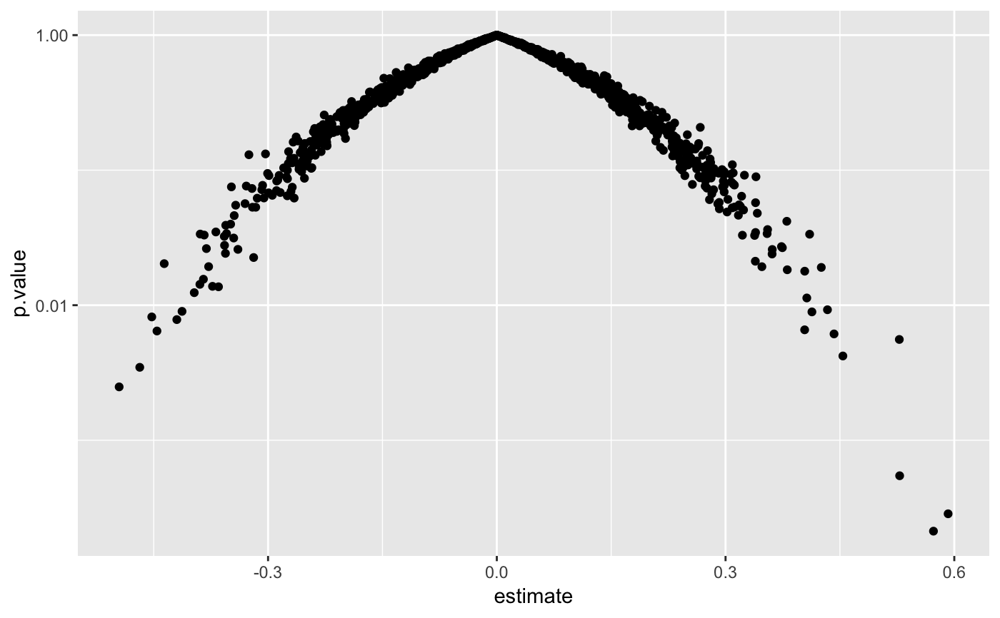

Tidy summarizes information about the components of a model. A model component might be a single term in a regression, a single hypothesis, a cluster, or a class. Exactly what tidy considers to be a model component varies cross models but is usually self-evident. If a model has several distinct types of components, you will need to specify which components to return.
# S3 method for rcorr tidy(x, diagonal = FALSE, ...)
| x | An |
|---|---|
| diagonal | Logical indicating whether or not to include diagonal
elements of the correlation matrix, or the correlation of a column with
itself. For the elements, |
| ... | Additional arguments. Not used. Needed to match generic
signature only. Cautionary note: Misspelled arguments will be
absorbed in |
A tibble::tibble with one row for each unique pair of columns in the correlatin matrix and columns:
Name or index of the first column being described
Name or index of the second column being described
Estimate of Pearson's r or Spearman's rho
Number of observations used to compute the correlation
P-value of correlation
Suppose the original data has columns A and B. In the correlation
matrix from rcorr there may be entries for both the cor(A, B) and
cor(B, A). Only one of these pairs will ever be present in the tidy
output.
if (requireNamespace("Hmisc", quietly = TRUE)) { library(Hmisc) mat <- replicate(52, rnorm(100)) # add some NAs mat[sample(length(mat), 2000)] <- NA # also column names colnames(mat) <- c(LETTERS, letters) rc <- rcorr(mat) td <- tidy(rc) td library(ggplot2) ggplot(td, aes(p.value)) + geom_histogram(binwidth = .1) ggplot(td, aes(estimate, p.value)) + geom_point() + scale_y_log10() }#>#> #>#> #> #>#> #>#> #> #>#> #> #>#> #> #>#> #> #>